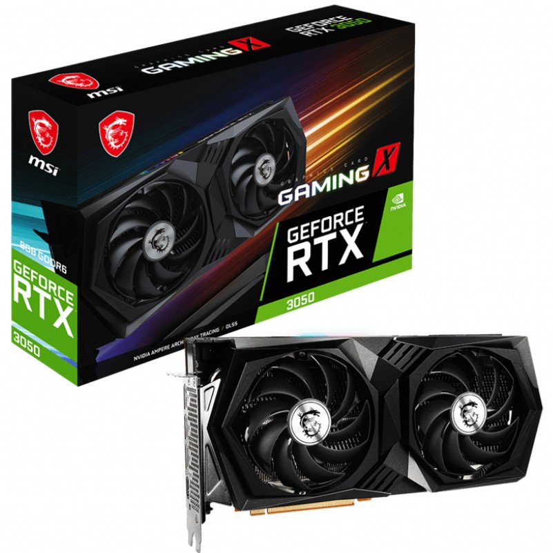

1. The GeForce RTX 3050

The Nvidia GeForce RTX 3050 is one of the few Nvidia graphics cards from the Ampere era that is anything close to being considered a budget
graphics card, and for what it is, it's a solid choice for 1080p gaming. It also comes with a lot of features that AMD cards simply don't have,
like machine learning-enabled Deep Learning Super Sampling (DLSS) technology, and tensor cores to not just play games at fast frame rates, but
also to handle creative workloads that even the best AMD graphics cards will stumble over. Still, it's expensive for an Nvidia xx50-series card,
with the GTX 1050 and GTX 1650 launching for nearly half the price of the RTX 3050. Such is the state of the industry though, and with graphics
card price inflation being what it is, this is probably the lowest price you'll pay for a graphics card with this kind of performance and advanced
features.
Click this to learn more about the graphics card.
2. Nvidia GeForce GTX 1660 Super
Replacing the Nvidia GeForce GTX 1660, the Nvidia GeForce GTX 1660 Super is absolutely one of the best cheap graphics cards on the market
right now. It is able to crank out nearly 80 FPS on Middle Earth: Shadow of War on Ultra graphics settings at 1080p and even managing a
decent 54 FPS at 1440p. This is incredible considering it comes in at under $250 (£200, AU$400). Still, the Nvidia GeForce GTX 1660 Super
does have its drawbacks. It still goes with a DVI port in lieu of a second HDMI port (or even a USB-C) and while it does have a DisplayPort,
you won't be running several displays with this card. It also lacks ray tracing cores, but you're going to be hard-pressed to find another
graphics card that's as good as the Nvidia GeForce GTX 1660 Super for the price.
Click this to learn more about the graphics card.